Polishing Documents
From R Markdown to Quarto
rstudio::conf 2022
Andrew Bray
Getting Exercise
To get the materials for each part of this course packed in an RStudio Project, run:
You can also
git cloneif you prefer that workflow.
Generic Blocks and Inlines
What happens when you pandoc it?
From the last exercise . . .
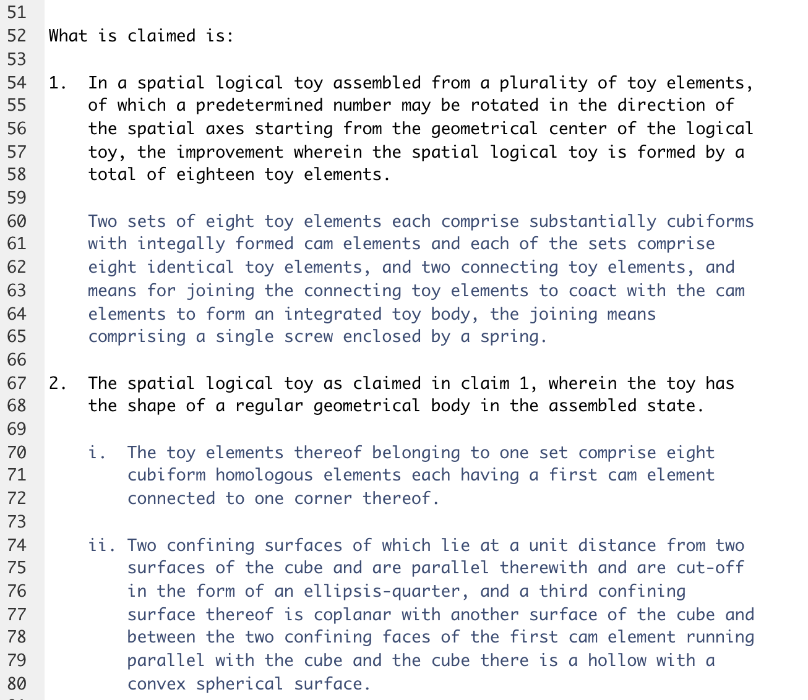
This looks familiar!
What happens when you pandoc it?
From the last exercise . . .
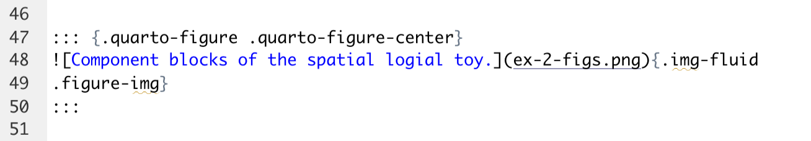
This looks familiar!
. . . but this does not.
The Bracketed Span
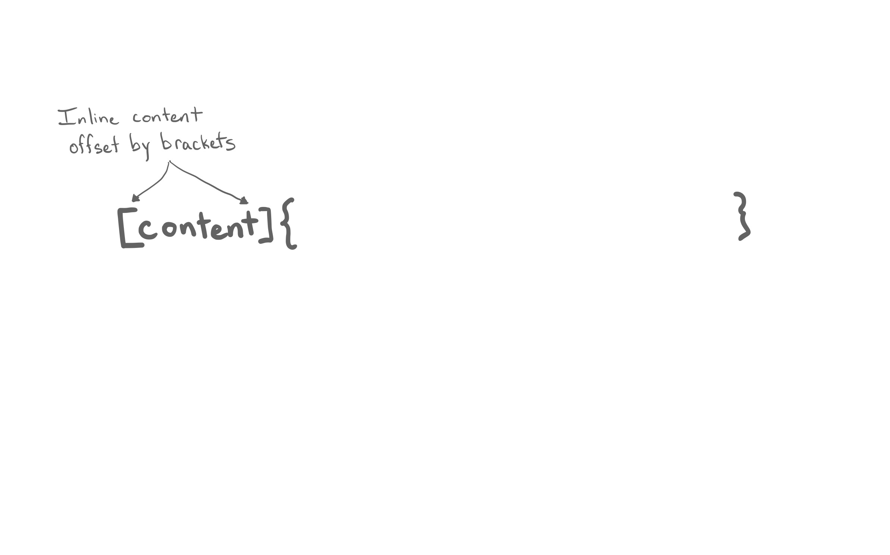The Bracketed Span
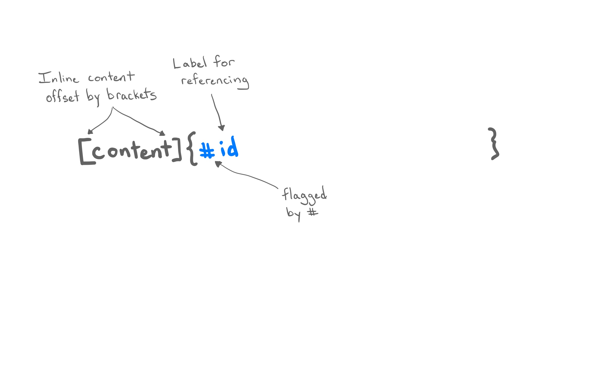The Bracketed Span
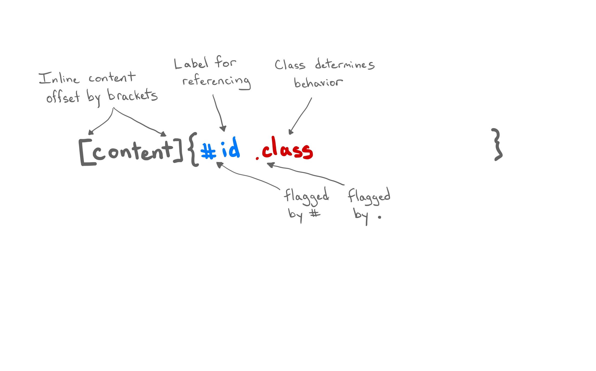The Bracketed Span
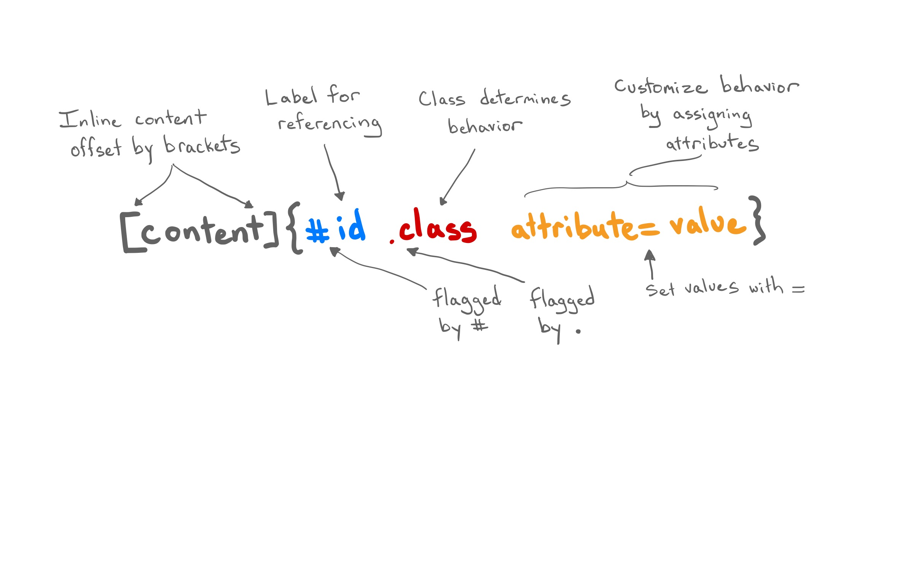The Bracketed Span
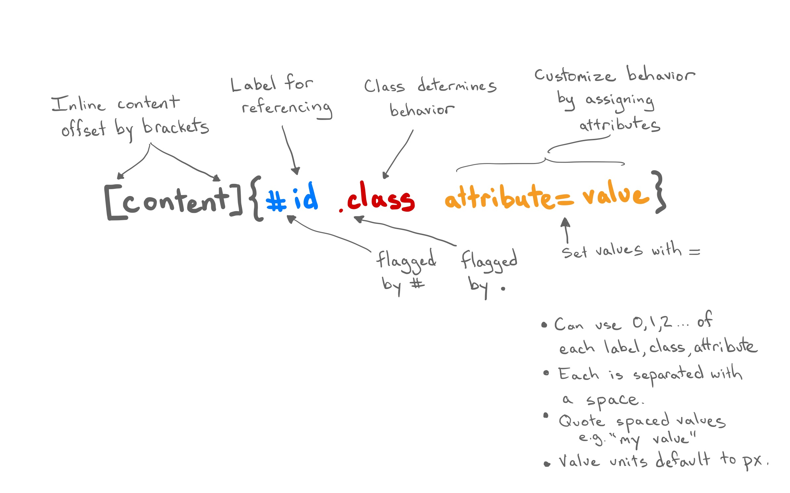The Fenced Div
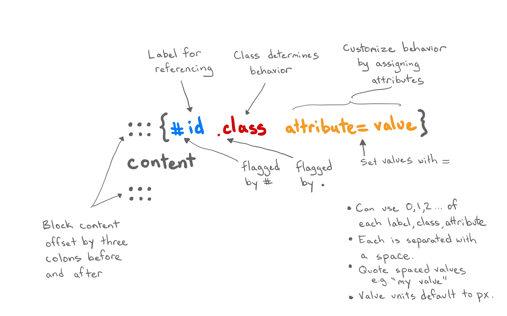Quarto Elements
What you’re about to see . . .
- Most of the elements work across the main output formats (html, pdf, docx, pptx)
- Many of the attributes work across multiple element types
- Most of this is new Quarto functionality. Some of it is original Pandoc.
- This is a subset of the elements available. See the Quarto Guide for the full list.
Callout Blocks
Highlight content for the reader in multiple formats.
Callout Blocks
Highlight content for the reader in multiple formats.
Callout Blocks
Highlight content for the reader in multiple formats.
Element Layouts
Quarto makes available several layout attributes that apply to broad range of block elements.
layout-ncol: split elements across n columns (2,3, …).layout-nrow: split elements across n rows (2,3, …).layout-valign: align elements (top,center,bottom,default).layout: Split elements into a 2D array by rows and columns1.
Element Layouts
layout-ncol
Markdown
:::{layout-ncol=2}
A novelty clock, watch, and the like for
keeping time at an animal's rate, defined
in terms of a multiple of human rate by
dividing the average lifetime of a
particular animal into the average
lifetime of a human being. The multiple
for dogs is seven, for example.

:::HTML output
A clock for keeping time at an animal’s rate. The multiple for dogs is seven, for example.
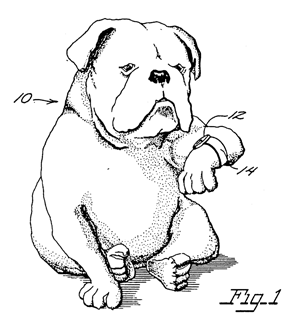
Element Layouts
layout-ncol + layout-valign
Markdown
:::{layout-ncol=2 layout-valign=middle}
A novelty clock, watch, and the like for
keeping time at an animal's rate, defined
in terms of a multiple of human rate by
dividing the average lifetime of a
particular animal into the average
lifetime of a human being. The multiple
for dogs is seven, for example.

:::HTML output
A clock for keeping time at an animal’s rate. The multiple for dogs is seven, for example.
Element Layouts
layout-ncol with small image
Markdown
:::{layout-ncol=2}
A novelty clock, watch, and the like for
keeping time at an animal's rate, defined
in terms of a multiple of human rate by
dividing the average lifetime of a
particular animal into the average
lifetime of a human being. The multiple
for dogs is seven, for example.

:::HTML output
A clock for keeping time at an animal’s rate. The multiple for dogs is seven, for example.
Element Layout Array
layout: The layout attribute1 is a 2-dimensional array where the first dimension defines rows and the second columns.
layout="[[1,1], [1]]"translates to: create two rows, the first of which has two columns of equal size and the second of which has a single column.- You can scale the relative dimension of each panel by changing the
1s.
Element Layout Array
Markdown
HTML output

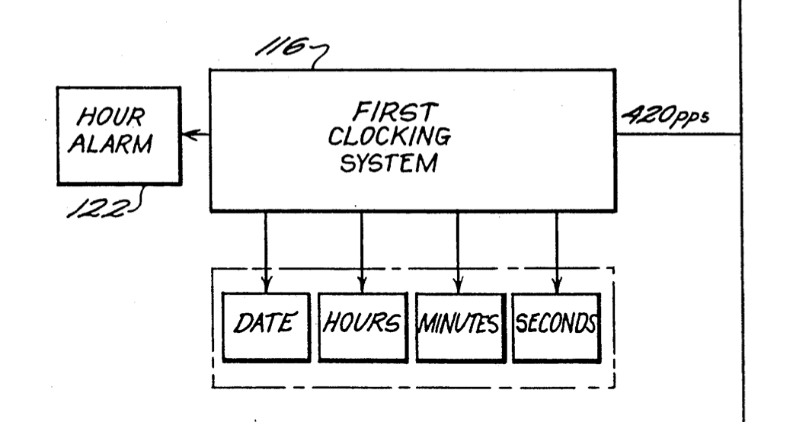
What would layout="[[1,5], [1]]" do?
Element Layout Array
Document Layout: column classes
Modify the width of the main body column for individual block elements (e.g. paragraph, figures).
Markdown
:::{.column-body}
A novelty clock, watch, and the like for
keeping time at an animal's rate, defined
in terms of a multiple of human rate by
dividing the average lifetime of a
particular animal into the average
lifetime of a human being. The multiple
for dogs is seven, for example.
:::
:::{.column-screen}
A novelty clock, watch, and the like for
keeping time at an animal's rate, defined
in terms of a multiple of human rate by
dividing the average lifetime of a
particular animal into the average
lifetime of a human being. The multiple
for dogs is seven, for example.
:::HTML output
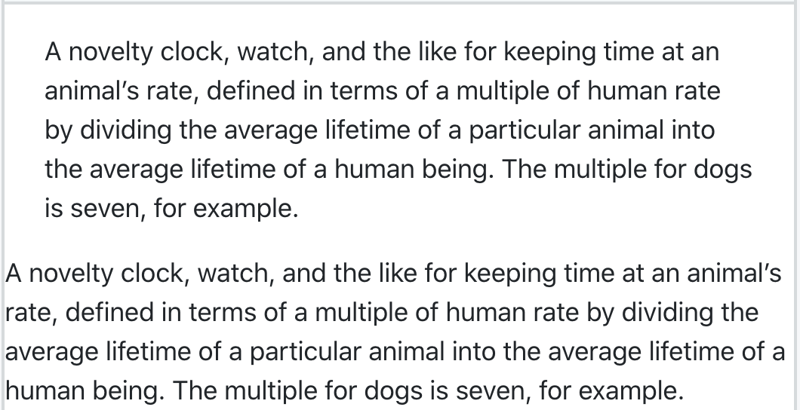
Document Layout: column classes
Modify the width of the main body column for individual block elements (e.g. paragraph, figures).
Markdown
:::{.column-body}
A novelty clock, watch, and the like for
keeping time at an animal's rate, defined
in terms of a multiple of human rate by
dividing the average lifetime of a
particular animal into the average
lifetime of a human being. The multiple
for dogs is seven, for example.
:::
:::{.column-screen}
A novelty clock, watch, and the like for
keeping time at an animal's rate, defined
in terms of a multiple of human rate by
dividing the average lifetime of a
particular animal into the average
lifetime of a human being. The multiple
for dogs is seven, for example.
:::HTML output
Document Layout: margin classes
Place any inline or block element from the body to the margin.
Document Layout: margin classes
Place any inline or block element from the body to the margin.
Poll
What is your preferred method of adding a figure to an Rmd so that it displays in HTML at 300 pixels wide?
A. markdown
B. html
C: knitr
Figures
Quarto expands the functionality of markdown. Set width, height, fig-align, add link, caption, and alt-text.
- Units default to
px. - Other choices
300in,300%(relative to image size),3em(relative to font size). - Entire fig can be nested inside the link syntax (
[fig](url)) to link the image
Labels for Links
In additional to external resources, links can go to elements of the same doc through its #id.
Markdown
HTML output
< Much more text >
A novelty clock, watch, and the like for keeping time at an animal’s rate . . .
- Works for many elements,
not just figs!
Labels for References
References can be made dynamic using #<type>-id and @<type>-id.
Markdown
HTML output
< Much more text >
A novelty clock, watch (Figure 1), and the like for keeping time at an animal’s rate . . .
- Unlike a link, a reference changes
with the ordering of the element
as well as its type. - Other
<type>include@tbl-,
@sec-,@eq-,@thm-, and many
more for math.
Customized References
You can customize the appearance of inline references by either changing the syntax of the inline reference or by setting options.
| Type | Syntax | Output |
|---|---|---|
| Default | @fig-elephant |
Figure 1 |
| Custom Prefix | [Fig @fig-elephant] |
Fig 1 |
| No Prefix | [-@fig-elephant] |
1 |
Rstudio and Quarto
Let’s play around in the RStudio Visual Editor!
Easy Table Generation
Have the editor write the markdown for you!
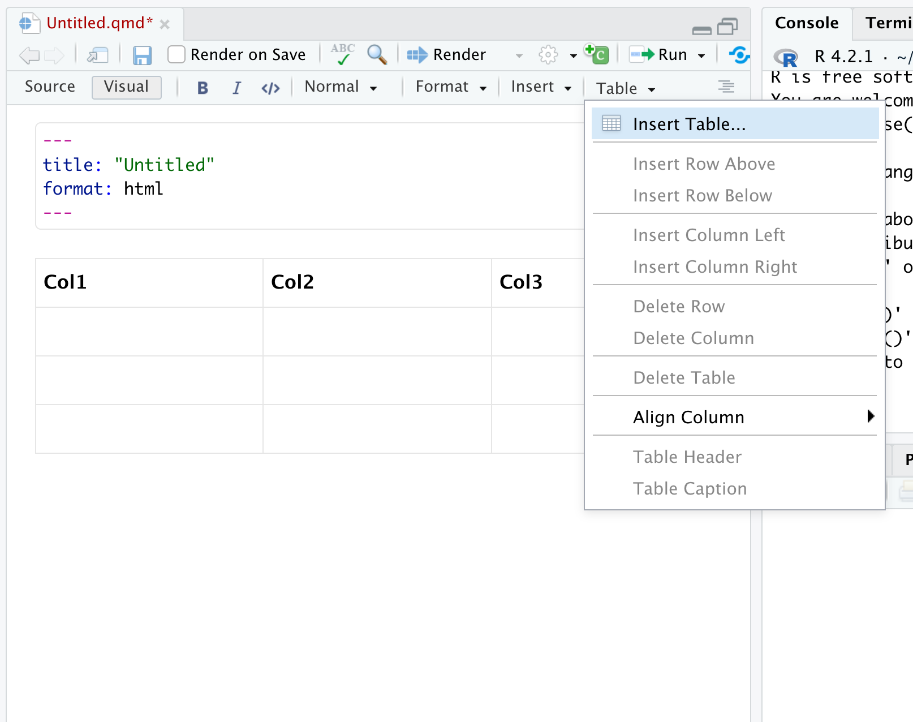Catalog of Elements
Type / on a new line to search the element types.
Reminder of Attributes
Click ... next to elements to see the attributes you can change.
YAML Intelligence
Ctrl + space to see all available options then tab-complete. Also works in VSCode.
Exercise 3
Open ex-3.qmd and follow the directions to create a document that describes your favorite place to visit on vacation.
When you’re done, please share a screenshot of your document in the GitHub Discussion thread “Exercise 3”.
Addressing Appearance with Themes
I’ll show you three webpages briefly.
What do you think they’re for?
Who do you think is their audience?
I’ll show you three webpages briefly.
What do you think they’re for?
Who do you think is their audience?
What Defines a Document?
A document consists of content, structure, appearance, format.
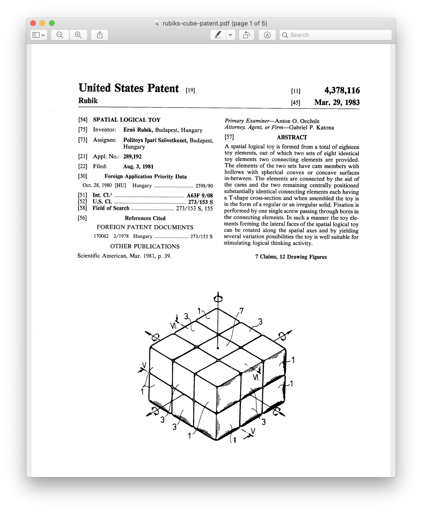
- Content: text, code, graphics
- Structure: paragraphs, lists, emphasis, etc.
- Appearance: fonts, colors, layout
- Format: functionality
The Power of CSS
A demonstration of what can be accomplished through CSS-based design. Select any style sheet from the list to load it into this page.
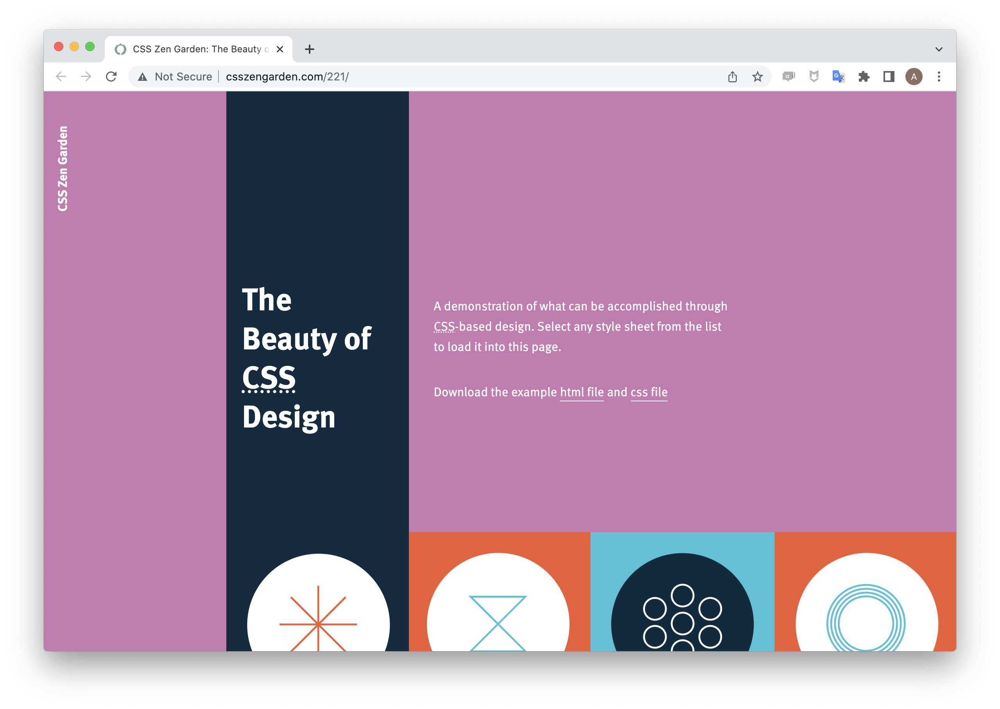 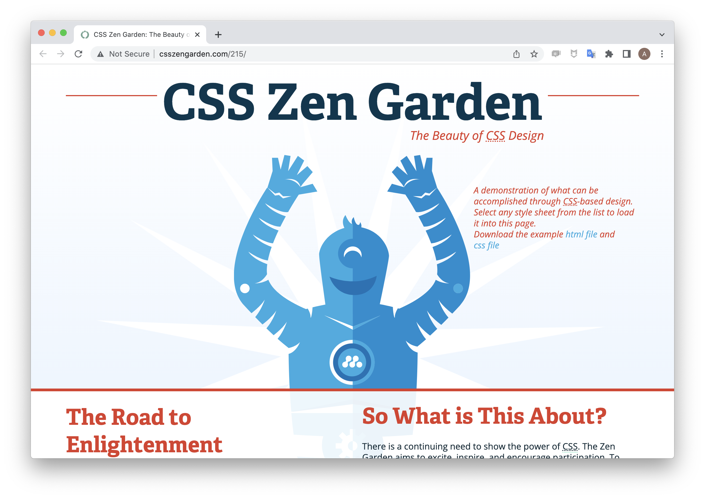 
HTML Themes
A collection of CSS rules that define font, colors, and spacing is called a theme. Quarto has 25 pre-loaded themes from Bootswatch.
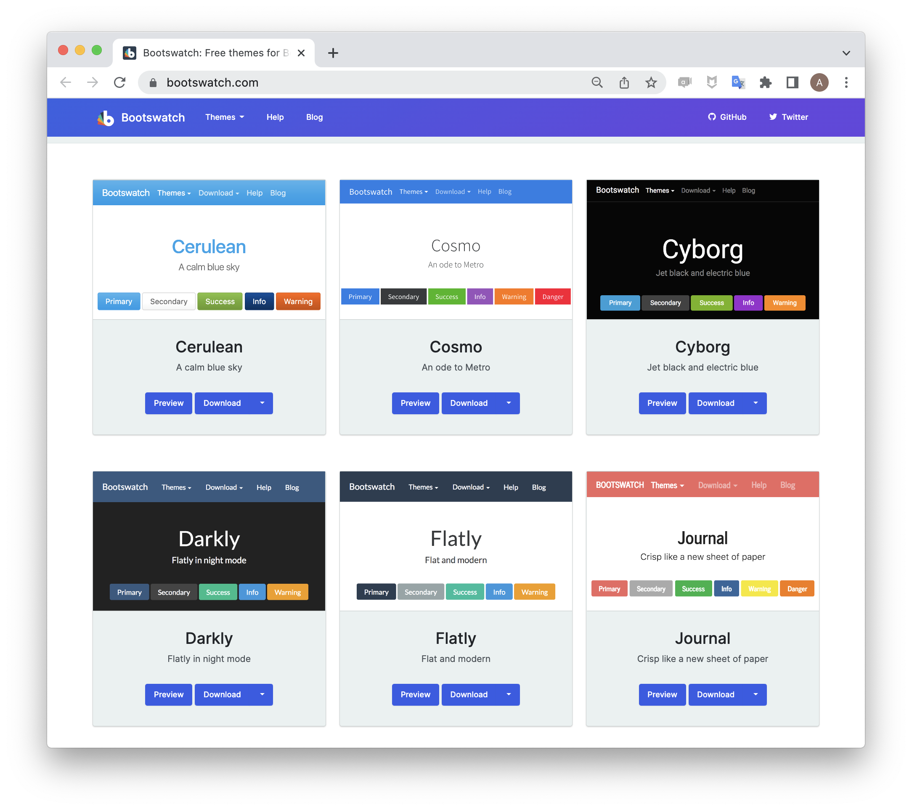{fig-alt=“screenshot of a collection of bootswatch themes.}
Exercise 3 Redux
Add a Bootswatch theme to your ex-3.qmd by adding the following to your YAML.
You can find the list of theme names at Quarto Guide >> Documents >> HTML.
Try out several of the themes (or view them at https://bootswatch.com/) then apply your favorite and share a screenshot of the styled document in the GitHub Discussion thread “Exercise 3”.
Baby Steps into CSS
HTML attributes
HTML, like markdown, has a set of elements that structure a website: <div>, <body>, <pre>, <span>, etc. Compare:
HTML Output
A Span Element.
we can add labels.
. . . still looks the same. Let’s add some style.
Adding Style
Markdown
HTML
HTML Output
A Span Element.
Quick Exercise
CSS Properties
There are many many many CSS properties available for styling.
https://www.w3schools.com/cssref/
Take a moment and add a few more different style properties from the list to a test span in your sandbox.
Syntax: style="property-1: value; property-2: value"
What do you they do?
DRY for style
If you have a style that you want to apply multiple times, it makes sense to encapsulate it in a CSS rule. Why?
Source
If you have a [style]{style="font-size: 1.5em; text-decoration: underline"} that you want to apply [multiple times]{style="font-size: 1.5em; text-decoration: underline"}, it makes sense to encapsulate it in a CSS rule. Why?
Don’t Repeat Yourself (DRY): repetitive code is hard to update… and long!
CSS Rule syntax
To write a rule for a class.
CSS Rule syntax
To write a rule for a class.
If you have a [style]{.loud} that you want to apply [multiple times]{.loud}, it makes sense to encapsulate it in a CSS rule. Why?
Exercise 4
There are three CSS challenges in this exercise
- Write the rules that style Inline Elements, Block Elements, and Metadata Elements in these slides.
- Create your own rudimentary callout box.
Stickies
On your way out the door for lunch, please write on the blue sticky note one that confused or frustrated you and on the yellow sticky something that you enjoyed, or got your excited.
References and further reading
- Quarto Guide for Authoring: format-agnostic treatment of figures, layouts, callouts and many more Quarto elements.
- Client Side Web Developent Ch. 5-7: approachable and concise introduction to how CSS work.
- Clock for keeping time at a rate other than human time: US patent by Rodney Metts and Barry Thomas